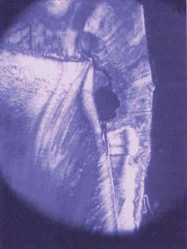
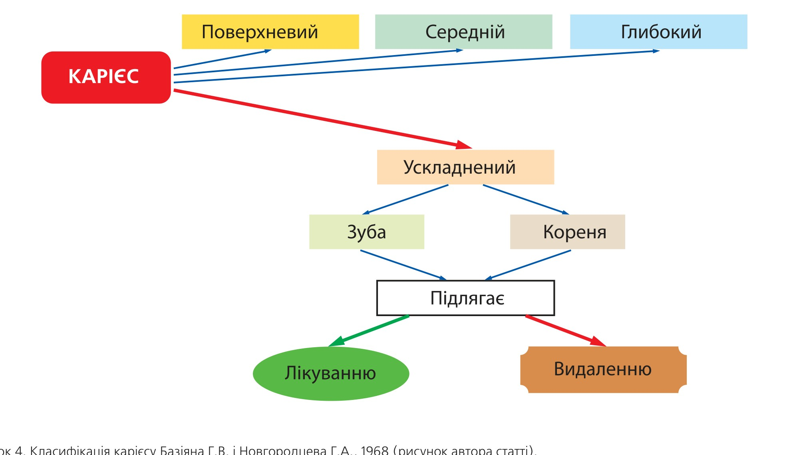
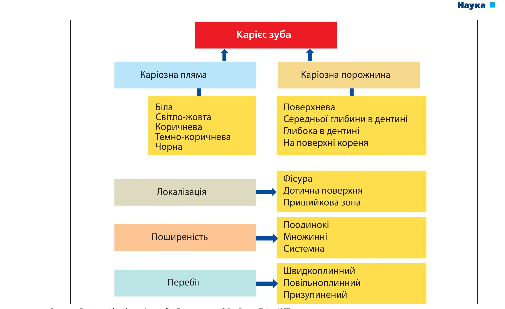

Наука · журнал «ДентАрт» 2015 №4
Систематизації карієсу зубів у практиці лікаря-стоматолога
CLASSIFICATION SYSTEMS OF DENTAL CARIES IN DENTIST'S PRACTICE
Продовження. Початок статті читайте у «ДентАрті» №3/2015.
Тестування ICDAS у порівнянні із системою визначення карієсу ВООЗ засвідчило високу ефективність нового методу.21 Огляд дитини триває понад 10 хвилин. Обов'язково потрібне клінічне калібрування дослідників. Метод рекомендується використовувати в наукових клінічних дослідженнях та клінічній практиці. Однак Де Аморін/De Amorim і співавт., 2012, вважали, що дані, отримані при використанні ICDAS і критеріїв ВООЗ, не можуть бути порівняні, оскільки вони не однакові, і хоча ICDAS дає можливість виявляти початкові прогресуючі стадії карієсу, знаходження еквівалентних ВООЗ критеріїв у системі кодування ICDAS дуже складне. Згідно з пропозицією Брага М./Braga М. і співавт., 2009, найкращим вирішенням проблеми адекватного порівняння цих двох методів може бути усунення коду «3» із системи. Так, за даними досліджень Мальдура І./Maldupa I., 2012, в Латвії, інтенсивність карієсу зубів 12-13-річних дітей за індексом К3ПУ була 5.6, а за індексом К1ПУ — 10.6,23 тобто визначення карієсу за двома системами різнилося удвічі.
Систему ICDAS для визначення карієсу зубів у дітей 9-10 років (n=1480) досліджувала Терехова Т.Н. і співавт., 2013. Автори виявили початкові ураження тимчасових зубів карієсом (D2 — карієс емалі) у 3-5% обстежених дітей і D2 постійних зубів — у 29-41%. ICDAS також дозволяє вивчити динаміку прогресування початкових форм карієсу (коди «1» і «2»). За даними Пустовойтової М.М., 2014, кількість каріозних плям збільшилася на 3.2% протягом двох років у 73-х пацієнтів віком 35-55 років. Таким чином, ICDAS відкриває можливість виявлення ранніх стадій каріозної хвороби і, відповідно, призначення раннього консервативного лікування, не чекаючи утворення каріозної порожнини. Однак необхідно ще вивчити практичну значущість цих рекомендацій на комунальному рівні.
Система ICDAS не враховує розміру каріозної плями, від якого залежить можливість консервативного лікування. Понад 35 років тому Г.Н. Пахомов установив, що можливість консервативного лікування (ремінералізації) початкового карієсу на стадії плями при удаваній цілісності поверхні зуба залежить від розміру плям. При площі каріозної плями понад 3 мм² ураження поширюються в дентин (рис. 3), і в таких випадках ремінералізація емалі зуба неможлива.7 За даними Є.В. Боровського, при пігментованій каріозній плямі спостерігаються незворотні зміни в дентині.3 З іншого боку, зустрічаються випадки призупиненого карієсу у вигляді чорних плям5 (ймовірно, цей вид ураження може бути віднесений до коду «4» за ICDAS), які не потребують оперативного втручання, якщо у пацієнта немає естетичного дискомфорту.

Рисунок 3. Карієс у стадії плями розміром понад 5 мм². При збереженому поверхневому шарі емалі відзначається руйнування емалево-дентинної межі з утворенням порожнини в дентині: 1 — поверхня емалі в зоні плями; 2 — підповерхнева демінералізація емалі; 3 — патологічні зміни в дентині. Малюнок відтворено з дозволу Г.Н. Пахомова.7
З наведеного обговорення випливає, що нова система визначення карієсу зубів ICDAS не позбавлена недоліків і, очевидно, не буде прийнята як універсальна, така, що виключає використання інших систем і класифікацій. У таблиці 5 узагальнено три найбільш затребувані сьогодні класифікації — Г.В. Блека/G.V.Black (1908), WHO (1971-2013) і ICDAS (2004), які, на наш погляд, не можуть замінити одна одну, оскільки створені в різний час і для різних цілей. Так, класифікація карієсу за Блеком поки що незамінна в роботі клініцистів; систематизація карієсу за ВООЗ широко й ефективно використовується в епідеміологічних дослідженнях, а ICDAS проходить період апробації і вже засвідчує досить високу ефективність у наукових дослідженнях з експериментально-аналітичної епідеміології карієсу зубів. Узагальнена система визначення і класифікації карієсу зубів може бути орієнтиром для практичних лікарів і дослідників при виборі методів роботи.
| Класифікації | Клінічні ситуації, що вимагають різних підходів у лікуванні | Втрачений зуб | ||
|---|---|---|---|---|
| Карієс емалі Початковий карієс Каріозні плями | Карієс дентину Каріозна порожнина | Ускладнення карієсу Пульпіт, апікальний періодонтит | ||
| G.V.Black's System-190810 | — | I, II, III, IV, V класи (за локалізацією ураження) | — | |
| ВООЗ-201327 | — | Карієс, пломба, пломба + карієс | Видалений внаслідок карієсу | |
| ICDAS-200426 (Міжнародна система визначення карієсу зубів) | Карієс емалі 4 ступені тяжкості: 1, 2, 3, 4 | Карієс дентину Порожнина в дентині, код 5 | Глибока каріозна порожнина З можливим залученням пульпи, код 6 | Відсутність зуба Чотири можливих причини, включаючи карієс |
| Пломбований зуб 8 варіантів | ||||
В епідеміологічних дослідженнях у країнах СНД поряд із системою ВООЗ широко використовується класифікація, запропонована Базіяном Г.В. і Новгородцевим Г.А. (1968), більш відома як методика ЦНДІС.1 У відповідності з цією класифікацією, розрізняють поверхневий, середній і глибокий карієс, що також використовується лікарями-стоматологами в клініці. Виділяється «ускладнений карієс», тобто пульпіт і періодонтит із залученням коронки зуба і/або коренів, що підлягають лікуванню або видаленню (рис. 4). На наш погляд, ця класифікація є, по суті, основою ICDAS, в якій міститься тільки деталізація тяжкості уражень карієсом, проте немає рекомендацій з лікування, як у класифікації ЦНДІС: зуби, що підлягають лікуванню або видаленню.
У 1977 р. нами розроблена6 і опублікована спільно з Боровським Є.В.4 класифікація карієсу зубів, адресована практичним лікарям-стоматологам. Вона включає основні складові, рекомендовані ВООЗ для класифікацій карієсу: тяжкість (глибину) ураження, локалізацію, поширеність і перебіг (рис. 5).

Рисунок 4. Класифікація карієсу Базіяна Г.В. і Новгородцева Г.А., 1968 (рисунок автора статті).

Рисунок 5. Класифікація карієсу зубів Боровського Є.В., Леуса П.А., 1977.
Раціональною тактикою лікаря-стоматолога при використанні систем і класифікацій карієсу зубів у практичній роботі повинен бути такий алгоритм (послідовність):
- поставити діагноз згідно з МКХ-10С (ICD-DA);
- описати стан, використовуючи будь-яку із класифікацій, але не порушуючи встановленого протоколу обстеження та діагностики;
- скласти план лікування й профілактики.
Для дослідників епідеміології карієсу важливо використовувати рекомендації ВООЗ, які дозволяють порівняти отримані дані з попередніми, оцінити динаміку (тенденцію) і порівняти на міжнародному рівні. Система ICDAS (Міжнародна система визначення карієсу зубів) може бути методом вибору і, можливо, кращою для експериментально-аналітичної епідеміології каріозної хвороби, передусім серед дитячого населення.
Система визначення факторів ризику. Кінцева мета будь-якої системи визначення (діагностики) карієсу зубів — оцінка ситуації, планування лікувально-профілактичних заходів, моніторинг результатів. Розглянуті вище системи належать до методів описової епідеміології, які не дозволяють виявляти групи населення з підвищеним ризиком виникнення карієсу зубів. Тому поряд з визначенням поширеності та інтенсивності карієсу зубів, особливо у дитячого населення, використовуються системи, що дозволяють визначити групу дітей з числа обстежених, котрі перебувають під підвищеним ризиком захворюваності та потребують особливої уваги у порівнянні з усіма дітьми.
У багатьох країнах СНД широко використовується система Т.Ф. Виноградової. Суть методу полягає в тому, що середній КПВ зубів у дітей ділиться на низький, середній і високий. Діти, які за своїми індивідуальними значеннями КПВ потрапили в порівняно низьку інтенсивність карієсу, визначаються в «компенсовану» диспансерну групу, при середній інтенсивності — у «субкомпенсовану», при найбільших значеннях індивідуальних КПВ — у «декомпенсовану» групу. Виходячи з такого розподілу обстежених дітей, їх викликали на лікування, яке називалося «санацією», 1, 2 або 3 рази на рік, відповідно. Очікувалося, що завдяки частішим викликам «декомпенсованих» дітей їхній стоматологічний статус поліпшиться. Однак цього не відбувалося ні в радянський час, ні в наступний період, тому що при високій інтенсивності карієсу закономірно КПВ зростає у 2-3 рази швидше, ніж при низькій інтенсивності, і «санація», тобто пломбування нових порожнин, не може, в принципі, зупинити ріст захворюваності. У дітей всіх «диспансерних» груп слід передусім усунути фактори ризику виникнення карієсу. Не лікування, а лише первинна профілактика може зменшити поширеність каріозної хвороби. Таким чином, система Т.Ф. Виноградової може бути використана для раціонального планування систематичного лікування карієсу зубів.
Науково обґрунтованою альтернативою для виявлення груп ризику серед дитячого населення на комунальному рівні є система, розроблена Бреттхоллом Д./Bratthall D., 2000, — SiC-index (найвища інтенсивність карієсу зубів). При будь-якій інтенсивності карієсу зубів, оцінюваної індексом КПВ, робиться додаткове визначення КПВ (SiC-index) в 1/3 обстеженої групи дітей з найвищими індивідуальними показниками індексу. Зазвичай SiC-index перевищує середнє КПВ зубів у 2-3 рази. Це дозволяє оцінювати рівень стоматологічного здоров'я дітей на комунальному рівні і робити відповідні рекомендації щодо оптимізації програми первинної профілактики карієсу зубів, якщо необхідно.
Висновки
Виходячи з викладеного вище, раціональним підходом у розробці та вдосконаленні комунальних програм первинної профілактики карієсу зубів на основі ситуаційного аналізу та моніторингу стоматологічного здоров'я населення з використанням описової епідеміології може бути визначення середнього КПВ зубів за критеріями ВООЗ, найвищої інтенсивності карієсу — SiC-index і факторів ризику. При дуже низькій поширеності карієсу у дітей виправдане виявлення початкових форм патології для планування індивідуальних програм профілактики та консервативного лікування. Ці рекомендації можуть бути успішно реалізовані при використанні відповідних систем визначення і класифікацій карієсу зубів «від Black's до ICDAS».
Література
- Алимский А.В., Павлов Н.Б., Шустова О.А. Показатель пораженности кариесом зубов и состояние стоматологической помощи г. Нижневартовска // Экономика и менеджмент в стоматологии (РФ). — 2002. — №3 (8). — С. 92-4.
- Базиян Г.В., Новгородцев Г.А. Основы научного планирования стоматологической помощи. М.: Медицина. 1968, 240 с.
- Боровский Е.В. Терминология и классификация кариеса зубов и его осложнений // Клиническая стоматология (РФ). — 2001. — №1. — С. 10-12.
- Боровский Е.В., Леус П.А. Кариес зубов. М.: Медицина. 1979, 255 с.
- Леус П.А. Клиника «черного» кариеса. В кн. «Медицина и здравоохранение Йемена». Доклады II Республиканской научно-практической конференции врачей ЙАР, 21-22.06.1973 г., Москва-Ходейда, 1975, С. 49-51.
- Леус П.А. Патогенетическое лечение и профилактика кариеса зубов. Дисс. докт. мед. наук, ММСИ, Москва, 1977.
- Пахомов Г.Н. Кариес зубов и его профилактика. Рига: Зинатне, 1976, 128 с.
- Пустовойтова Н.Н. Влияние системы диагностики кариеса зубов на планирование лечебно-профилактических мероприятий // Сборник трудов 2-го стоматологического конгресса Республики Беларусь, 22-24.10.2014 г. — Минск. — БГУ. — 2014. — С. 93-95.
- Терехова Т.Н., Мельникова Е.И., Боровая М.Л. Диагностические уровни кариозной болезни у 9-10-летних школьников г. Минска // Материалы I Белорусского международного стоматологического конгресса, г. Минск, 23-25 октября 2013 г. Минск: БГМУ, 2013. — С. 25-27.
- Black G.V. A work on operative dentistry, vol. 2. Chicago: The Medico-Dental Publ Co, 1908.
- Braga M.M., Oliveira L.B. et al. Feasibility of the international caries detection and assessment system II in epidemiological surveys and comparability with standard WHO criteria // Caries Research. — 2009. — V. 43. — P. 245-249.
- Bratthall D. The Significant Caries Index // International Dental Journal. — 2000. — V.50. — P. 378-384.
- De Amorim R.G., Figueiredo M.J. et al. Caries experience in a child population in Brazil, using ICDAS II // Clinical Study Investigations. — 2012. — V.16. — P. 513-520.
- EGOHID II. Oral health surveillance in Europe. Oral Health Interviews and Clinical Surveys: Guidelines. Edited by D.M.Bourgeois et al. — University of Lyon, France, 2008, 108 p.
- Fejerskov O., Kidd E.A.M. Dental caries. Blackwell Munksgaard, 2004, 560 p.
- Fisher J., Glick M. A new model for caries classification and mamagement // JADA. — 2012. — V. 143 (6). — P. 546-551.
- FDI policy statement on Classification of caries lesions of tooth surfaces and caries management systems // International Dental Journal. — 2013. — V.63. — P. 4-5.
- ICD-DA: International Classification of Diseases, Dental Application, WHO, Geneva, 1995.
- Iranzo-Cortes J.E. et al. Caries diagnosis: agreement between WHO and ICDAS II criteria in epidemiological surveys // Community Dental Health. — 2013. — V. 30. — P. 108-111.
- Ismail A.I. Visual and visuo-tactile detection of dental caries // Journal of Dental Research. — 2004. — V. 82. — P. 56-66.
- Ismail A.I., Sohn W. et al. The ICDAS: an integrated system for measuring dental caries // Community Dentistry and Oral Epidemiology. — 2007. — V. 35. — P. 170-178.
- Klein H., Palmer C.E., Knutson J.W. Studies on dental caries // Public Health Reports. — 1938. — V. 53. — P. 751-765.
- Maldupa I. The role of caries risk assessment methods in the development of preventive programmes in high risk region // Summary of doctoral thesis. — Rigas Stradina Universitate. — Riga. 2012, 41 p.
- Miller W.D. The micro-organism of the human mouth. Philadelphia, PA, 1980 (Republished, Basel: S. Karger, 1973).
- Nelson S., Eggertsson H. et al. Dental examiners consistency in applying the ICDAS criteria for caries prevention // Community Dental Health. — 2011. — V. 28. — P. 238-242.
- Pitts N.B. "ICDAS" — an international system for caries detection and assessment being developed to facilitate caries epidemiology, research and appropriate clinical management // Community Dental Health. — 2004. — V.21. — P. 193-198.
- World Health Organization. Oral Health Surveys Basic Methods. First Ed., WHO, Geneva, 1971; Fifth Ed., WHO, Geneva, 2013, 125 p.